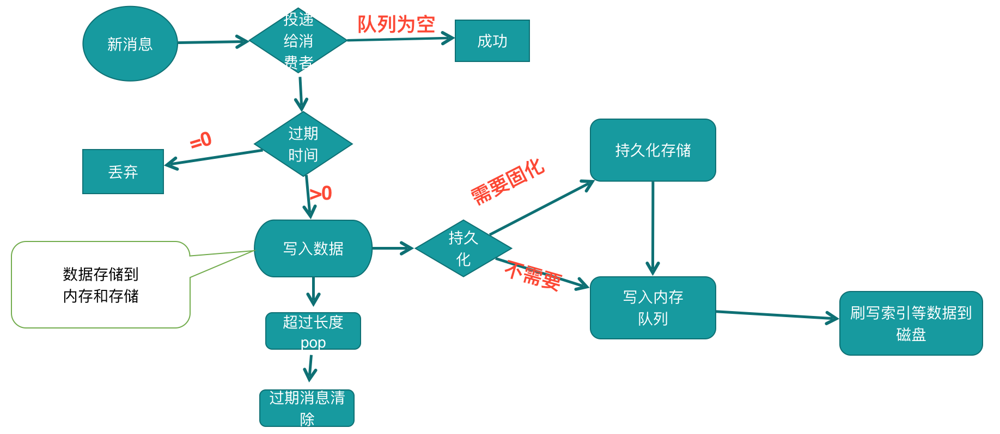

RabbitMQ 数据写入概要

在由 channel 进程提交数据到队列进程之后
队列进程拿到数据首先会进行判断当前队列数据是否为空
如果当前队列是否有消费者在进行等待消费数据. 则进行消息投递. 直接发送给消费者。
否则进行判断消息的ttl属性是否过期等,如果为真,则直接进行丢弃.
消息进行存储的时候,则先判断消息属性是否需要持久化.
如果不需要持久化的情况 ,则直接写入到内存。
如果需要持久化优先提交一次持久化逻辑,再写到内存一份
事后操作完后,不管当前消息是否需要持久化,都会进行判断是否需要刷数据到磁盘,因为内存不够的情况,非持久化的数据也会刷到磁盘的.
只是持久化的数据是每次提交都会进行写文件操作,非持久化数据刷到磁盘是在系统判断因为内存不够的情况进行刷盘.
重启的时候,非持久化的数据不会被恢复.持久化的数据会自动恢复.
详细写入过程,请参拷 写入过程-索引持久化
在每条消息被处理完之后,会进行判断当前队列基础属性的判断
长度是否超过了最大长度的属性x-max-length及最大字节数x-max-length-bytes.如果为真,则把当前队列最开头多出来的数量进行pop掉
队列最开头的消息是否ttl 超时,包括消息属性的ttl及队列属性x-message-ttl .如果为空,则把开头的消息进行删除掉,直到消息最开头的消息不再符合ttl要求 .
当然以上超过队列长度及ttl 被删除掉的消息,在删除的时候会进入死信逻辑 .
优先判断队列的死信配置再判断 队列属性配置x-dead-letter-exchange: 消息进入死信时候使用的交换机. x-dead-letter-routing-key: 消费进入死信时候使用的路由
RabbitMQ存储分索引文件和数据文件,在3.5.x的某一个版本之前,默认是索引和数据文件独立存储的,就是索引文件只存索引 ,而数据文件存储数据.
在3.5.x某一个版本开始默认消息体小于4kb的情况下, 消息内容和索引存储在一起. 当然这个数据大小是可以配置的.
在rabbitmq.config配置中的参数：queue_index_embed_msgs_below
RabbitMQ 每个队列对应一个文件夹, 每个队列对应多个索引文件进行存储.
其实从这样的设计来看.如果队列数据非常多,并且每个队列都一直在往里写持久化数据并且如果内核参数没有调优的情况下,其实有可能会产生不少随机IO,磁盘IO会比较大.